◆「GUDAGUDA龍馬千鈞一髪！Pick Up召喚」期間◆
期間:2021年11月17日(三) 19:00～12月1日(三) 11:59
從期間限定活動「昭和Ｇ神計畫 GUDAGUDA龍馬千鈞一髪！ 消失的信信Head之謎」關聯從者從者之中，包含1位新登場的4位期間限定從者與3種期間限定概念禮裝Pick Up！
※活動參加條件満たしていない狀態でも本召喚おこなえます。
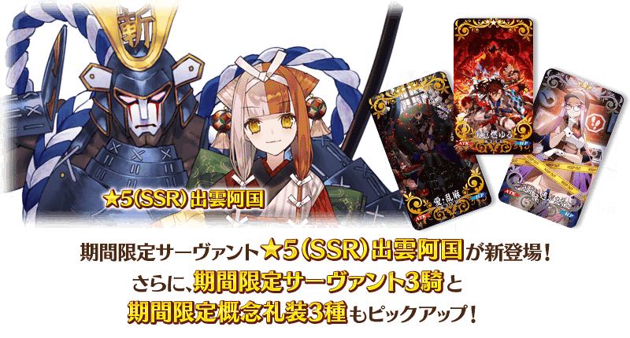
▼期間限定從者
・★5(SSR)出雲阿國
・★4(SR)織田信長(Berserker)
・★3(R)岡田以藏
・★3(R)森長可
▼期間限定概念禮裝
・★5(SSR)失意燃ゆる
・★4(SR)愛・乱麻
・★3(R)その瞳は逃がさない
裝備3種Pick Up對象期間限定概念禮裝的話，在期間限定活動「昭和Ｇ神計畫 GUDAGUDA龍馬千鈞一髪！ 消失的信信Head之謎」中會提升活動道具的掉落獲得數。
Pick Up期間中，Pick Up對象從者與概念禮裝的出現機率提升！
詳情請在聖晶石召喚畫面左下的召喚詳細確認。
11次召喚中確定1張★4(SR)以上和確定1位★3(R)以上的從者！ ※確定★4(SR)以上包含從者和概念禮裝。 ※本頁面皆為開發中圖片。會有與實際圖片相異的情況。
◆關於1天1次限定的有償聖晶石召喚◆
※可以1天1次限定於期間限定召喚用有償聖晶石1個進行「1回召喚」。
※透過有償聖晶石1個的「1次召喚」，每天3:00重置。
※透過有償聖晶石1個的「1次召喚」對應的聖晶石召喚有好幾個的情況，各個召喚中1天各進行1次有償聖晶石1個的「1次召喚」。
※請注意就算進行透過有償聖晶石1個的「1次召喚」，不包含在1次獎勵的計算。
※聖晶石購入時賦予的「附贈(オマケ)」是做為無償聖晶石而不包含在有償聖晶石的個數，請注意別搞錯。另外，持有聖晶石的細項，可從持有道具一覧確認。
◆關於透過召喚獲得從者硬幣
在期間限定召喚、故事召喚、友情點數召喚中入手從者時，可獲得該從者的從者硬幣。
◆有關從者的注意◆
※下述的從者在Pick Up期間結束後不會追加到故事召喚。
・★5(SSR)出雲阿國
・★4(SR)織田信長(Berserker)
・★3(R)岡田以藏
・★3(R)森長可
※請注意下述的從者不會從友情點數召喚被抽出。
・★3(R)岡田以藏
・★3(R)森長可
◆有關概念禮裝的注意◆
※下述的概念禮裝，Pick Up期間中也能靠友情點數召喚獲得。
・★3(R)その瞳は逃がさない
※在自動變還設定登錄★3(R)概念禮裝的情況，下述的概念禮裝會變成自動變還的對象。
・★3(R)その瞳は逃がさない
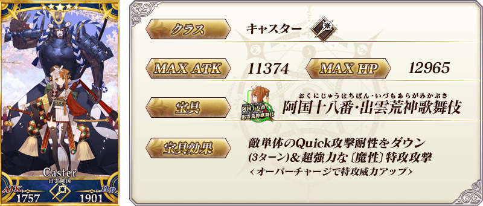
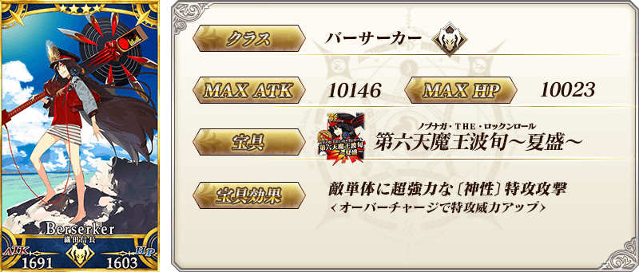
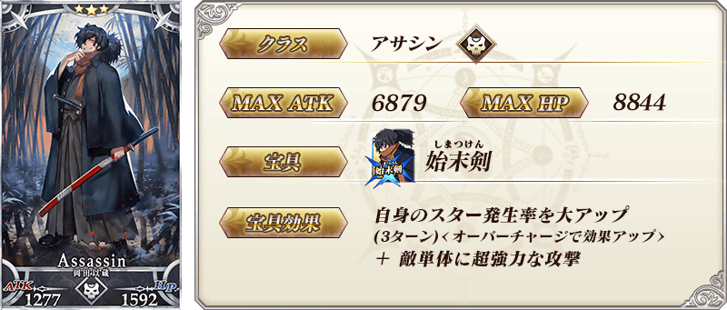
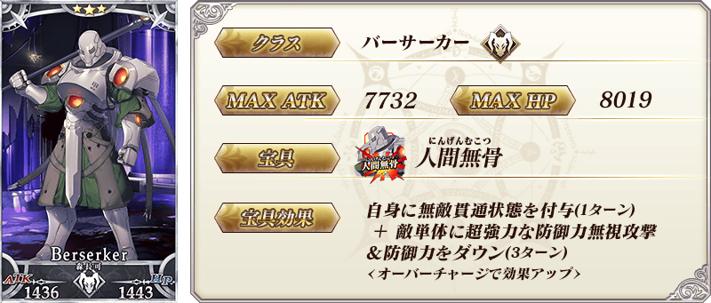
| 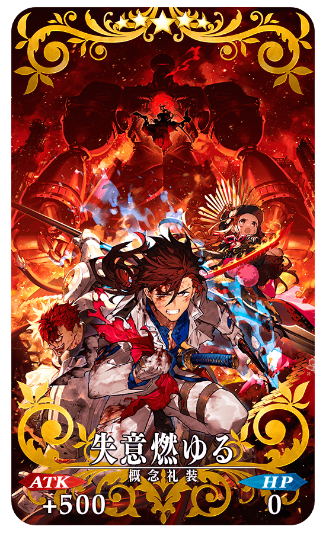 |
★★★★★SSR
|
| 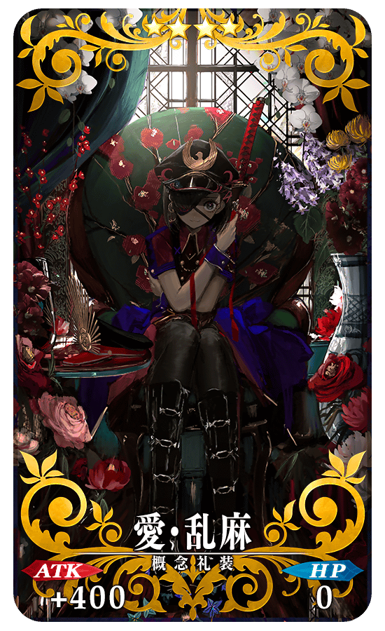 |
★★★★SR
|
| 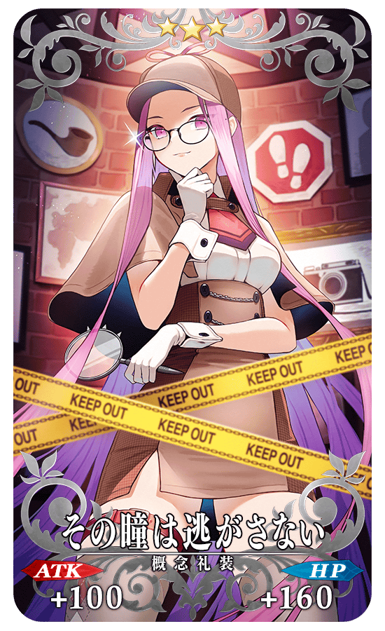 |
★★★R
|

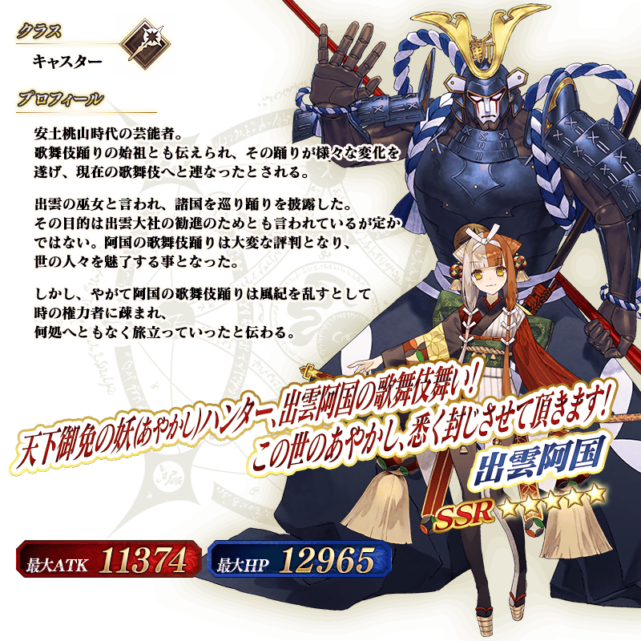
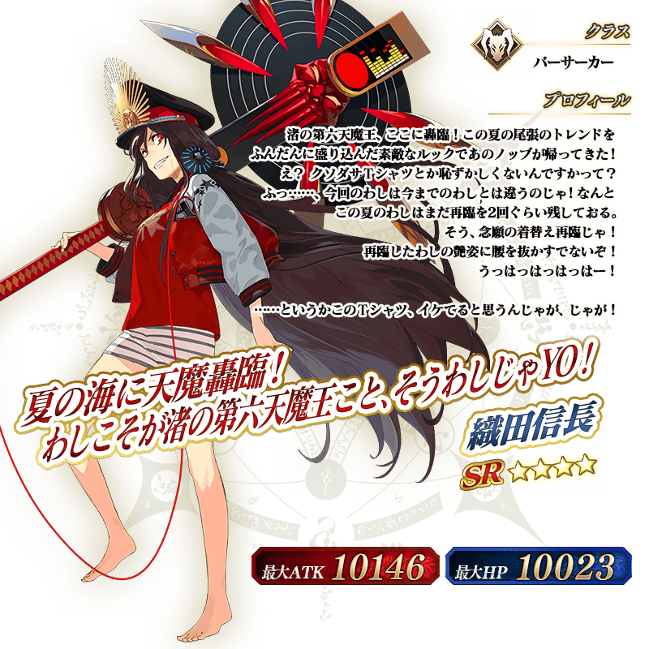
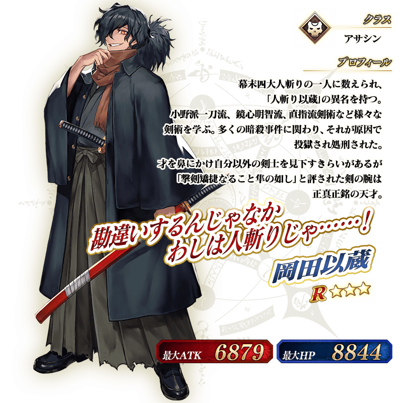
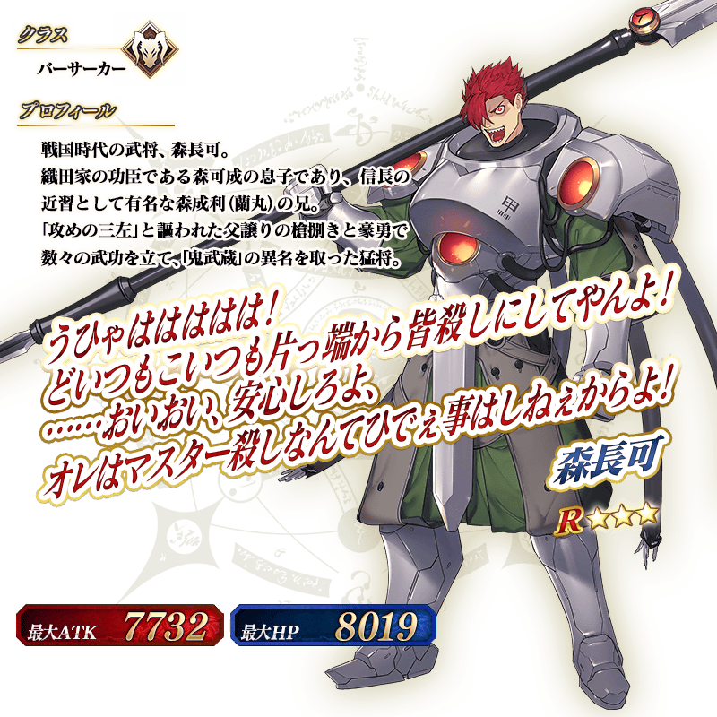
【11月18日(四) 1:00更新】
介紹「★5(SSR)出雲阿國」的寶具演出！
「★5(SSR)出雲阿國」的寶具演出於一部份裝置有對應全螢幕顯示。
介紹在本召喚Pick Up的從者寶具演出！
3位Pick Up從者的寶具演出於一部份裝置有對應全螢幕顯示。
【★4(SR)織田信長(Berserker)】
【★3(R)岡田以藏】
【★3(R)森長可】

「★3(R)岡田以藏」的靈衣開放權做為期間限定活動「昭和Ｇ神計畫 GUDAGUDA龍馬千鈞一髪！ 消失的信信Head之謎」的報酬登場！
本活動中，在通過特定主線關卡後可靠活動道具交換入手上述靈衣開放權。
另外，想開放靈衣的話，除了靈衣開放權外再加上必須滿足一些開放條件。
◆有關靈衣開放權的注意◆
※「★3(R)岡田以藏」的靈衣開放權只限期間限定活動「昭和Ｇ神計畫 GUDAGUDA龍馬千鈞一髪！ 消失的信信Head之謎」的活動道具交換期間才能入手。
※「★3(R)岡田以藏」的靈衣會配合外觀變化一部份語音。
※請注意未持有「★3(R)岡田以藏」的情況，可入手靈衣開放權。但無法進行靈衣開放。


「靈衣開放」是自強化畫面進行。
※「靈衣開放」後會自動切換戰鬥角色和圖示。若想回到「靈衣開放」前的狀態和變成其他再臨階段的情況，可自從者詳細畫面變更。 ※進行「靈衣開放」不會讓職階和能力等有所變化。

介紹靈衣開放「えろうイケちょるスーツ」的「★3(R)岡田以藏」寶具演出！
「★3(R)岡田以藏」的寶具演出於一部份裝置有對應全螢幕顯示。
其他還有，期間限定活動「昭和Ｇ神計畫 GUDAGUDA龍馬千鈞一髪！ 消失的信信Head之謎」同時舉辦！
關於詳情，請自下述橫幅確認。
■「昭和Ｇ神計畫 GUDAGUDA龍馬千鈞一髪！ 消失的信信Head之謎」詳細情報